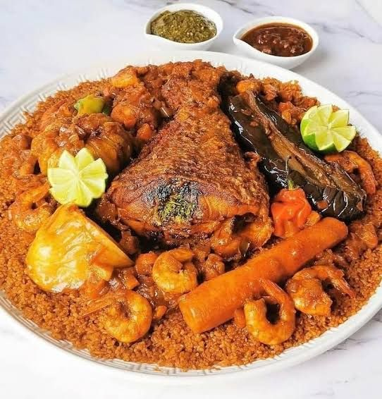

Le Thiébou diène, souvent considéré comme le plat national du Sénégal, est bien plus qu'un simple riz au poisson.
C'est un symbole de partage, de convivialité et de maîtrise culinaire.

Chef-d'œuvre gastronomique
Ingredients
Poisson(thiof,merou ou capitaine)
Riz Brisé
Chou blanc
Carottes
Igname\Patate douce
Navet
Aubergine
Gombos(optionnel)
Tomate fraiche
Gros oignon
Concentré de tomate(pour le riz á la tomate)
Huile
Morceau de yet
Morceau de guedj
Nokoss
Piment
Tamarin
Sel
Etape de préparation
Etape1: Faites d'abord la farce du poisson, le rof, en mixant tous les ingrédients indiqués ci-dessus.
Pratiquez de profondes incisions dans la chair du poisson, préalablement nettoyé et coupé en larges tronçons.
Introduisez la farce dans les incisions.
Etape2: Dans la casserole, faites chauffer l'huile, ajoutez le yet, puis plongez le poisson et faites bien revenir des deux côtés.
Une fois bien doré, réservez (vous pouvez laisser le yet).
Etape3: Faites ensuite revenir les oignons.
Etape4: Ajoutez le concentré de tomate dans l'huile chaude et remuez énergiquement, attention, ça colle !
Ajoutez ensuite de l'eau jusqu'aux 3/4 de la casserole.
Etape5: Plongez le guedj, l'ail, le laurier, le sel, le poivre, le jumbo, bref, tout l'assaisonnement. Pour le piment, broyez un piment et ajoutez-le au bouillon.
Etape6: Portez à ébullition puis ajoutez les légumes (entiers) et le petit piment qui reste, que vous veillerez à ne pas crever. Ajoutez le poisson pour terminer sa cuisson.
Etape7: Surveillez attentivement la cuisson des légumes et du poisson et réservez au fur et à mesure de la cuisson des différents ingrédients (je sais, c'est du sport).
Etape8: Pendant ce temps, lavez votre riz (bien le frotter pour retirer l'amidon, sinon ça colle) et faites le blanchir. Deux options : soit au micro-onde (la mienne) soit au couscoussier.
Etape9: Quand tout est cuit, retirer les ingrédients du bouillon et plongez le riz.
Etape10: Baissez bien le feu car sinon, ça brûle.
Etape11: Le riz cuit en environ trente min. En fonction des qualités de riz, il faut plus ou moins de bouillon et la meilleure des cuisinières peut encore se faire avoir, mais dites-vous que lorsque vous plongez le riz, le bouillon doit dépasser au moins d'une phalange le niveau du riz.
Etape12: Couvrez, et laissez cuire à feu doux. A mi cuisson, retournez le riz, en veillant à ne pas l'écraser ni le casser.
Etape13: Et voilà, vous n'avez plus qu'à servir sur un grand plat, le riz d'abord, le poisson au centre du plat et les légumes autour.